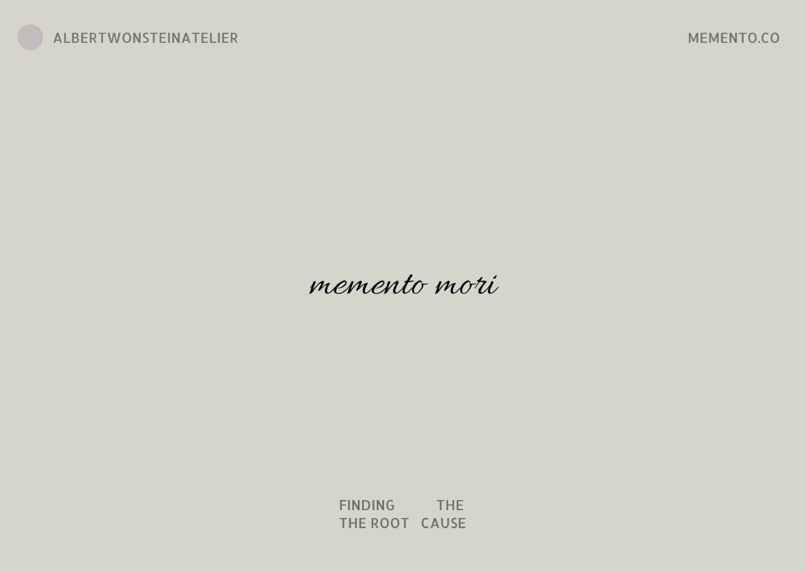
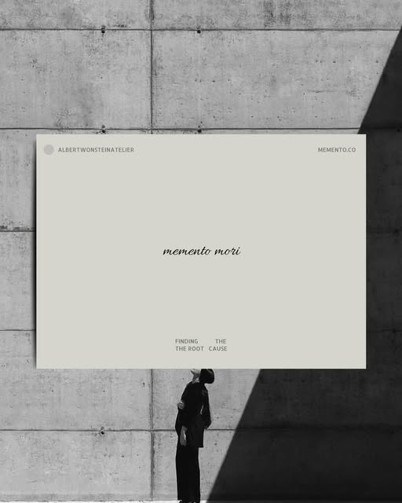
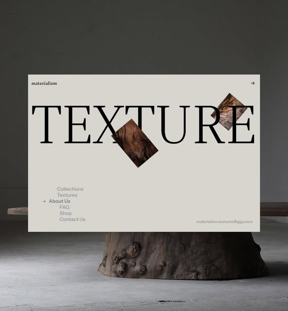

← Portfolio ( Case study — 04 )
The Materialism — an atelier you can walk into.

The brief
Albert Wonstein Atelier designs interiors in timber, stone and lime plaster — rooms that feel lived in from the first day.
The atelier needed a website that carried the warmth of those rooms, plus a quieter campaign microsite, Memento, for a reflective collection.


Approach
(03)- 01
Material first
Split layouts pair a small framed detail with a full-height room, so every page feels like stepping inside.
- 02
Two voices
A characterful serif speaks for the atelier; a monospaced type carries addresses and notes, like labels in a workshop.
- 03
Memento
A stripped-back campaign page: one script line, ‘memento mori’, and nothing else competing for attention.

Outcome
The Materialism became the atelier’s calling card — the link sent to every new client before the first meeting.
“Onform found the warmth in our materials and put it on the screen. The website feels like walking into the atelier.”
Albert Wonstein Atelier